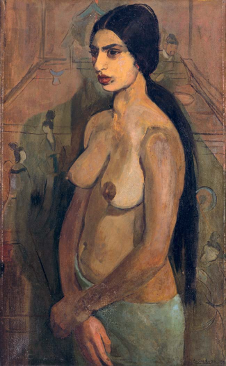

Amrita Sher-Gil, a 20th-century modern Indian art trailblazer, is appreciated worldwide for her depictions of Indian women completing daily tasks in the early 1900s. She synthesized the East and the West, painting members of her Indian community with techniques from Europe, and paved the way for female artists. Sher-Gil is renowned globally for her contributions to Asian art, but what does not get noticed to the same extent is her queer identity. This article aims to discuss Sher-Gil’s life and how her bisexuality has impacted and been alluded to in her art.
Born in Budapest, Hungary, in 1913 to a Sikh Indian father and a Jewish Hungarian mother, Sher-Gil grew up in a wealthy family. When given the choice to move to India or stay in Hungary, she chose South Asia, which allowed her to develop an acute awareness of the contrasts between Eastern and Western cultures, something that significantly influenced her artistic vision. Much of her work focuses on the depiction of daily life in India while utilizing European painting methodologies and inspiration from the works of Paul Cezanne and Paul Gaugin.
Sher-Gil’s works contain many aspects of the beauty, sensuality, and vulnerability of women, and her unique portrayal of them in an empathetic and intimate approach reveals her deep connection to her subjects, something some scholars consider to be her exploration of queerness through the identities and experiences of her subjects. By imbuing her subjects with a sense of agency and autonomy, she subtly challenged traditional gender roles and societal expectations, a reflection of her own non-conforming identity. However, we cannot analyze the relationships she had with those whom she painted fully, as her mother burned the letters she wrote to her female love interests. But multiple sources do broadly discuss her bisexuality.[1]
Self-portraits made by Sher-Gil are assumed to be one of the most insightful lenses through which we can explore her queerness. In her piece titled Self-Portrait as a Tahitian, her identity is subversive, yet ever-present. Depicted below, this portrait is of herself as one of Gaugin’s subjects. It is known that Gaugin’s works highlight the artist’s fascination with Tahitian women, particularly from a sexual standpoint. By placing herself as the subject, Sher-Gil is declaring herself as both the one who is fascinated by Sher-Gil and the object of the sexual fantasy, thereby representing a relationship between two women. But generally across all of her portraits, Sher-Gil presents herself with an unapologetic gaze and an aura of self-assuredness.
These depictions can be seen as acts of defiance against societal norms that may have sought to suppress her individuality, including her queerness. By boldly presenting herself on her own terms, Sher-Gil subtly communicated her identity and invited viewers to engage with her authentic self.

Moreover, Sher-Gil's art was marked by a celebration of intimacy and emotional connections. Her paintings often depicted tender moments shared between individuals, regardless of their gender. This emphasis on emotional bonds and human connection can be interpreted as a reflection of her own experiences as a queer person. In a society that often marginalized non-heteronormative relationships, Sher-Gil's art became a form of resistance, asserting that love and connection are universal and transcend societal norms.
While explicit references to Sher-Gil's queerness may be limited in her art due to the constraints of her time and the conservative milieu she inhabited, her work exudes a profound sense of authenticity and individuality. It is within this authenticity that her queerness is subtly but unmistakably woven. The spaces between the brushstrokes, the expressions on the faces of her subjects, and the emotions evoked by her art collectively provide a glimpse into the complexities of her identity.
Amrita Sher-Gil's art is a tapestry woven with threads of identity, culture, and queerness. Her ability to capture the essence of the human experience, while subtly infusing her work with her personal identity, speaks to her status as a visionary artist. Through her paintings, she challenges societal norms, celebrates individuality, and invites viewers to engage with the multifaceted aspects of human identity. Sher-Gil's legacy reminds us that art has the power to transcend time and space, capturing the essence of the artist's soul and creating connections that span generations.